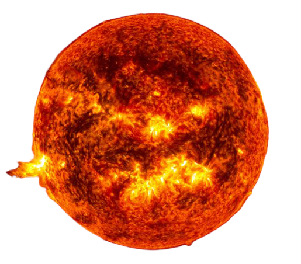
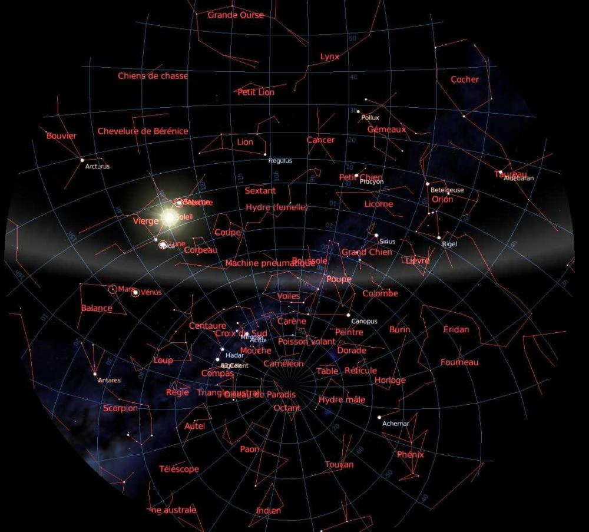
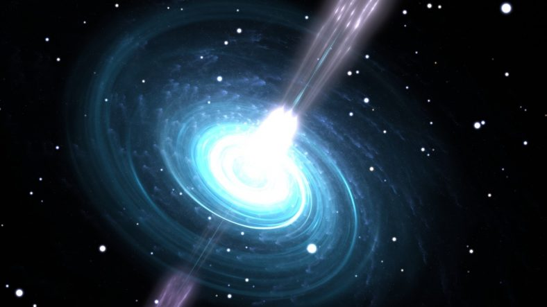
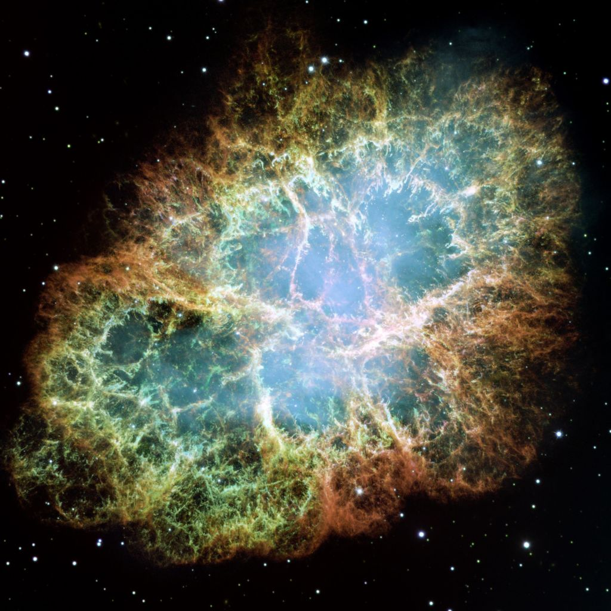
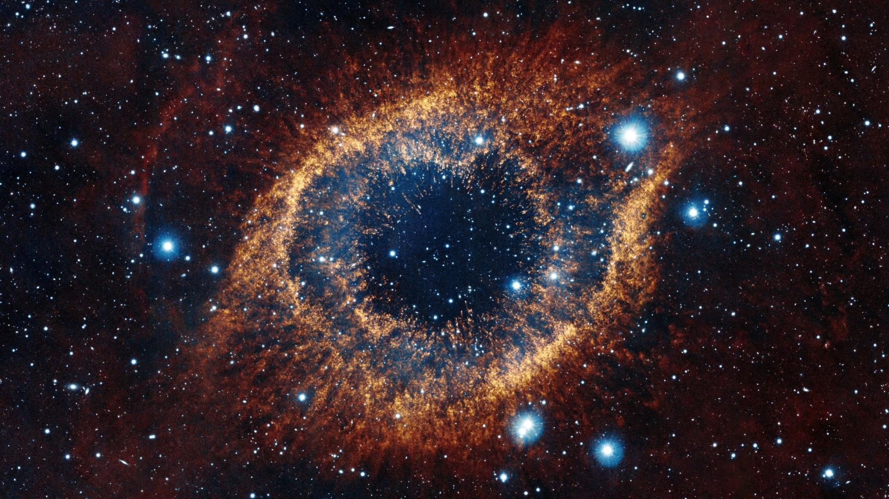

What is a Star ? 
A star is a very hot ball of gas: several million degrees at the center (temperature sufficient to
trigger nuclear reactions), several thousand degrees at the surface.
In a star, the balance is obtained between two opposite forces: gravity precipitates the matter towards
the center while the pressure pushes this matter away. The life span of stars is limited: when they have
transformed all their hydrogen into helium (which takes several billion years), they swell and become
red giants.
Depending on their initial mass, they will then die quietly as white dwarfs or spectacularly as
supernovas; in the latter case their agony may even lead them to the stage of black holes.
 Close Stars
Close Stars
Space is immense, but the space between the gravitational zones of the 100 billion stars in our Milky Way
is
relatively small.The closest star to the Sun is only 4.24 light-years away, it is called Proxima Centauri or α Centauri C, but it is not a bright star, it is a red dwarf of absolute magnitude +15.49 and apparent magnitude +11.05, which seems to revolve around its two neighbors, α Centauri A and α Centauri B.
Its luminosity in visible light is equal to 0.0056% of that of the Sun, it radiates almost all its light energy (85%) in the infrared.
For a star to shine it must produce nuclear reactions in its center. For this it must reach a minimum mass, 8% of the mass of the Sun (M☉). Below this mass, they are brown dwarfs or planets.
Proxima Centauri with a mass equal to 12% of M☉, shines slightly. It will exist long after the Sun because it consumes very little fuel and will shine faintly for tens of billions of years. Due to its proximity, α Centauri A is the fourth brightest star in the night sky, after Sirius, Canopus and Arcturus, it is a yellow dwarf of spectral type G2V.
It means that it is a yellow dwarf whose surface temperature is between 5300 K and 6000 K, like our Sun.
Our Dear Sun
Our Sun is a bright, hot ball of hydrogen and helium at the center of our solar system.It is 864,000 miles (1,392,000 km) in diameter, which makes it 109 times wider than Earth.
It's 10,000 degrees Fahrenheit (5,500 degrees Celsius) at the surface, and 27 million degrees Fahrenheit (15,000,000 degrees Celsius) in the core.
Yikes! Our Sun is pretty impressive, but how does it compare to other stars? There are billions more stars in the Milky Way galaxy
- the galaxy we call home. And there are many, many more in the rest of the universe. Is our Sun special?
It turns out that our Sun is an average sized star.
There are bigger stars, and there are smaller stars. We have found stars that are 100 times bigger in diameter than our sun.
Truly, those stars are enormous. We have also seen stars that are just one tenth the size of our sun.
Our Sun is an ordinary star — just one of billions of stars in our galaxy alone.
However, as our own star, the Sun holds special status for us and is essential to our existence.
The Sun's gravity holds the solar system together, and nuclear fusion within the Sun supplies the energy for life on Earth.
Without the Sun, Earth would be a drastically different place.
 Constellations
The astronomical origins of the calendar
Most of us live by our calendars to keep track of our schedules.
But did you know that the calendar has astronomical origins?
Constellations were largely created to help people remember the important patterns the stars make, but
they have many other uses, including the formation of the calendar.
For example, the ancient Egyptians watched the star then called Sopdet, known today in Canada as Sirius.
Each year, when they saw Sopdet rise, they knew that the annual flooding of the Nile was approaching.
This important information greatly affected their lives. It was the same for many people around the
world.
The ancient Romans created a 12-month calendar based on the lunar months, the first of which was the one
we call March.
The names of the ancient Roman months are as follows:
A constellation is therefore a particular asterism.
In the sky, the stars of a constellation are far apart but appear grouped in figures, so that the constellation has no distance of its own.
The western constellations are grouped into two parts, dividing the sky more or less following the two terrestrial hemispheres, the southern sky for the south and the northern sky for the north.
The northern constellations are the oldest and correspond to the sky plan visible from the Mediterranean regions by the ancient astronomers. The southern constellations were named by Western astronomers after the 15th century.
The International Astronomical Union (IAU) divides the sky into 88 official constellations with precise boundaries, so that each point in the sky belongs to a constellation.
Man is fascinated by the cosmic scenery that the sky represents when observed without any artificial lighting.
The stars all seem to hang at the same distance from the earth.
The sky changes day and night throughout the year. At first glance the sky is dotted with thousands of bright and twinkling stars.
In theory one could see 3,800 stars at a glance, in reality only 2,600 are visible because of stray light.
 What is a Pulsars ?
Neutron stars are very small but very dense (1 billion tons per cubic centimeter).They concentrate the mass of a star like the Sun in a radius of about 10 km, corresponding to what is called the Chandrasekhar mass.
They are the remains of very massive stars of more than ten solar masses. When a massive star comes to the end of its existence, it collapses on itself, producing an impressive explosion called supernova.
This explosion disperses huge amounts of matter into space but spares the core of the star. This core contracts and is transformed into a large part of a neutron star. These objects, called magnetars or magnetostars, have very intense magnetic fields.
Along the magnetic axis, charged particles, such as electrons, propagate and produce synchrotron radiation. If it rotates rapidly on itself, it projects a thin brush of radiation along its magnetic axis, which is called a pulsar.
Discovery of the first pulsar
Pulsars are corpses of stars, extremely dense dwarfs that turn on themselves much faster than other stars (10 to 1000 times per second).Their light sweeps through space like a lighthouse. It was in 1967 with the radio telescope sensitive to flickers, that Jocelyne Bell, a student of Hewish, detected an anomaly in the swarming of radio waves: the scruff.
Jocelyne Bell searched for the scruff for months and discovered a series of regular pulses. These pulses seemed too regular to be natural. John Pilkington was able to measure the distance from the Earth to the pulsar, 1000 al.
This 1.33 second clock was too perfect to be a natural process. At first scientists wondered if this was not a sign of intelligence. Hewish, using the Doppler effect, put an end to this hope of signals from another civilization. Subsequently, several pulsars were discovered. The radio sources come from neutron stars and a pulsar is a fast rotating neutron star, corresponding to the collapsed core of a massive star that exploded as a supernova at the end of its life. In general the explosion of a supernova leaves a super compact celestial object in its heart called SNR (Super Nova Remnant).
It is the FGST (Fermi Gamma-ray Space Telescope) of Nasa that discovered for the first time a pulsar, whose name comes from the abbreviation of pulsating radio source. This fast rotating neutron star, on the image opposite, is 10 000 years old, it blinks about three times per second by expelling its gamma rays into space. Five French teams from IN2P3/CNRS, CEA/Irfu and Insu/CNRS participated in the analysis and interpretation of these results, published in the journal Science (La science Express, October 16, 2008). Astronomers have counted almost 1800 pulsars in the Milky Way, found thanks to their radio signals or their weak pulsations in visible light and X-rays.
The Crab Nebula
The Crab Nebula or M1 is the characteristic result of a star explosion or the visible remains of matter from the explosion of a supernova. This supernova exploded in 1054, observed by several Far Eastern astronomers from July 1054 to April 1056. These mysterious filaments, are not only extremely complex, but seem to have less mass than the original supernova and a higher speed than expected. It is located at a distance of about 2 kiloparsecs or 6,300 light years from Earth, in the constellation Taurus. The nebula has a diameter of 11 light-years and its expansion speed is 1 500 km/s.It is the first astronomical object to be identified with a supernova explosion. At the center of the nebula is a pulsar, a neutron star as massive as the Sun but only the size of a small city.
The Crab Pulsar rotates at a speed of 30 times per second. It radiates about 200,000 times more energy than the Sun and this in an extremely wide frequency range. A supernova is the visible phenomenon directly resulting from the cataclysmic explosion of a star which leads to its total destruction and thus to the death of the star.
 What is a Supernova ?
Red supergiants, the largest stars in the universe, are stars close to explosion because they have already consumed all their hydrogen, helium or carbon in successive nuclear reactions. Their equilibrium broken, the gravitational collapse of the core of the star continues and the explosion is imminent. The internal pressure of the core of the supergiant linked to the gravitational force is no longer in equilibrium with the pressure of nuclear radiation. At the same time as its core collapses, the outer layers of its envelope swell considerably and cool.Betelgeuse (α Orionis) the red supergiant of the constellation Orion, is one of the largest known stars after Antares.
Betelgeuse is about 600 times larger than the Sun and shines like 100,000 suns. Only a few million years old, Betelgeuse is already nearing the end of its life. Like all supergiants, it consumes an enormous amount of matter in a very short time, about the mass of the Sun in only 10,000 years.
In a few thousand years, Betelgeuse will explode as a core-collapse supernova. People of that time will be able to see it from Earth, even in daylight.
A supernova is a new star, the term comes from the Latin "nova", which means "new". They appear suddenly in the sky and disappear after a few months. Supernovae are rare events in our Milky Way, about one to three per century, but on the scale of the universe, we observe them every day. Supernova explosions contribute to the chemical enrichment of the universe. It is during its supernova explosion that the star releases the chemical elements, which it has synthesized during its existence and during the explosion itself.
It is the stars at the end of their life, and in particular the supernovae that generate all the elements beyond iron. Iron is a stable element and the collapse of the supernova core stops when it is entirely made of iron.
Indeed the fusion of iron does not produce energy but consumes it, then the star running out of fuel, can not support the weight of the upper layers, which further compress the iron, the nuclei disintegrate and protons capture electrons to form neutrons. This new concentrated core of neutrons, incredibly compact, a few km in radius and the mass of the star, is then able to resist the pressure of the outer layers, which stops its collapse abruptly. The effect is cataclysmic, the layers of gas then "bounce" on the core.
The energy released by the layers falling towards the center, produces a shock wave that "blows" the outer layers of the star, this is called a supernova explosion.
The gaseous envelope that will be projected into space will release a considerable energy, as much energy as the Sun for billions of years. This terrible explosion, which projects the upper layers of the star into space, will be visible throughout the galaxy. Then a supernova will spread, over hundreds of billions of km, seeding the interstellar medium with heavy elements, manufactured during the life of the star and during the explosion.
These heavy elements are the constituents of the telluric planets, like our Earth and also the constituents of our body and of all the objects which surround us. The supernova of Tycho called SN 1572, is a nova that appeared in the constellation of Cassiopeia in 1572.
It was visible to the naked eye and observed by Tycho Brahe on November 11, 1572, then brighter than the planet Venus.
Tycho Brahe noticed that the position of the object did not move in relation to the fixed stars, like the planets. He deduced that it was not a planet, but a star. In March 1574, it disappeared below the visibility threshold.
This superb image from the Chandra X-Ray Space Telescope is one of the most important images ever produced with an observatory in Earth orbit. It is as well known as the Crab Nebula supernova. The Crab Nebula (M1 or NGC 1952) is the result of the explosion of the supernova SN 1054 observed from July 1054 to April 1056 by a Chinese astronomer.
In 1758 Charles Messier discovered it and made it the first object in his catalog (M1 in the Messier catalog).
Supernovas are indeed explosions of extremely luminous stars, so luminous that they are remarkable among the bright stars of a galaxy.